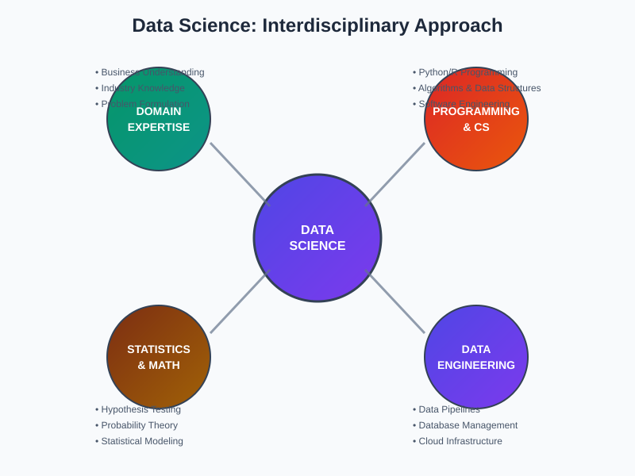
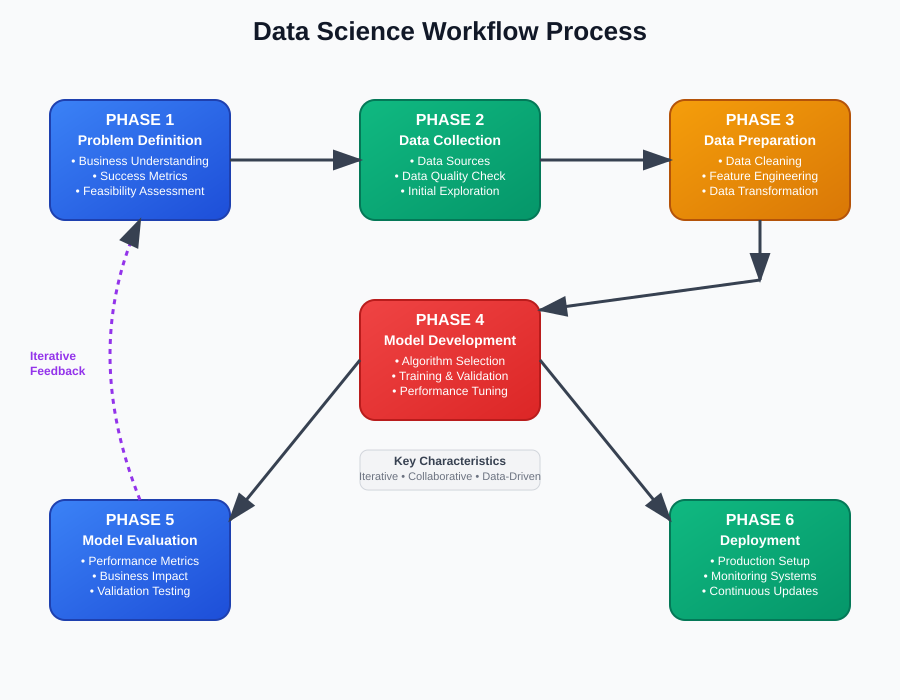
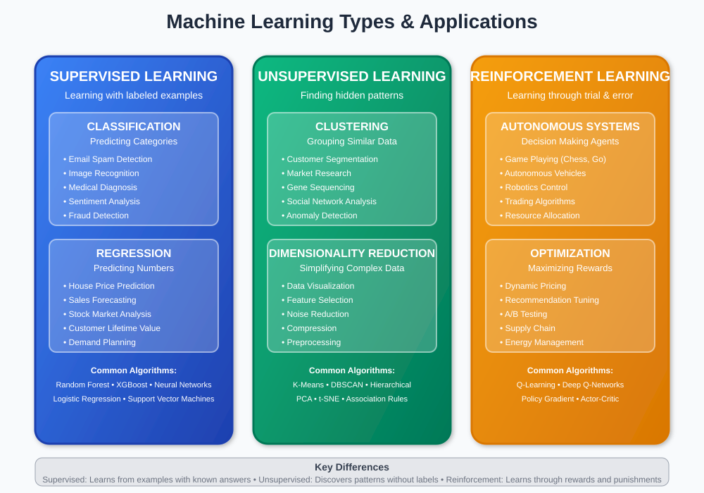
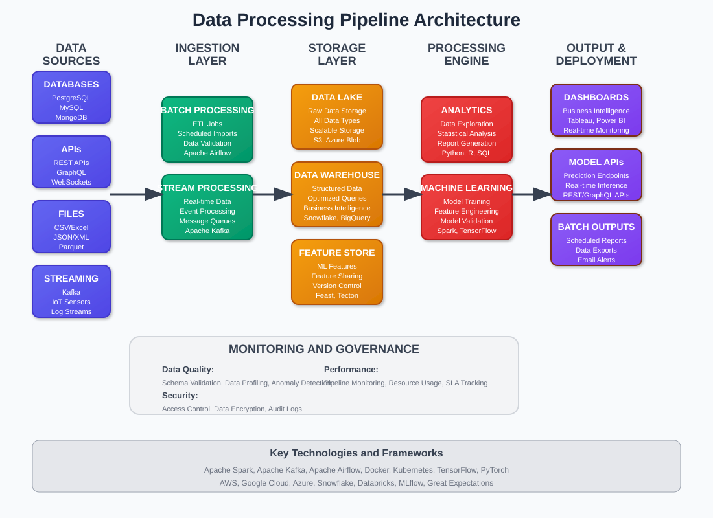

Data Science Fundamentals: A Comprehensive Guide
🧭 Quick Navigation
- Introduction to Data Science
- Data Science Workflow
- Machine Learning Fundamentals
- Data Processing Pipeline
- Model Development & Deployment
- Tools and Technologies
- Best Practices
- References & Further Reading
📊 Introduction to Data Science
Data Science is the practice of extracting actionable insights from data to solve real-world business problems. It combines programming, analytical thinking, and domain expertise to turn raw data into valuable knowledge that drives decision-making.

What Data Scientists Actually Do
Day-to-Day Activities - Collect and clean messy, real-world data - Build predictive models and recommendation systems - Create dashboards and visualizations for stakeholders - Communicate findings to non-technical audiences - Collaborate with engineers to deploy models in production
Core Skills Required - Programming: Python/R for analysis, SQL for databases - Business Acumen: Understanding industry problems and metrics - Communication: Translating technical results into business value - Critical Thinking: Questioning assumptions and validating results
Real-World Impact
Data science drives tangible business outcomes:
- E-commerce: Product recommendations increase sales by 20-30%
- Healthcare: Predictive models reduce readmission rates
- Finance: Fraud detection saves millions in losses
- Transportation: Route optimization reduces delivery times
- Marketing: Customer segmentation improves campaign ROI
🔄 Data Science Workflow
The data science process is iterative and problem-focused, emphasizing practical solutions over theoretical perfection.

Phase 1: Understanding the Problem
Define Success Metrics - What specific business outcome are we trying to achieve? - How will we measure success? (revenue, efficiency, accuracy) - What's the minimum viable improvement needed?
Assess Feasibility - Is this problem solvable with available data? - Do we have enough historical examples? - What's the expected timeline and resource requirements?
Phase 2: Data Collection & Exploration
Finding Your Data - Internal databases and data warehouses - Third-party APIs and external datasets - Web scraping and data acquisition tools - Surveys, experiments, and A/B tests
Getting to Know Your Data - What does each column represent? - How much data is missing or inconsistent? - What patterns emerge from initial visualizations? - Are there obvious data quality issues?
Phase 3: Data Preparation
The 80% Rule Data cleaning typically consumes 80% of project time:
- Missing Values: Decide to fill, interpolate, or exclude
- Outliers: Investigate whether they're errors or important signals
- Duplicates: Remove or consolidate duplicate records
- Formatting: Standardize dates, currencies, and categorical values
Feature Engineering - Create new variables that capture business logic - Combine existing features in meaningful ways - Transform data to match model requirements - Encode categorical variables for machine learning
Phase 4: Model Development
Start Simple - Begin with basic models (linear regression, decision trees) - Establish baseline performance metrics - Understand which features matter most - Iterate and add complexity gradually
Model Selection - Choose algorithms based on problem type and data size - Consider interpretability requirements - Balance accuracy with deployment constraints - Test multiple approaches and compare results
🤖 Machine Learning Fundamentals
Machine learning is the engine that powers data science applications, enabling computers to find patterns and make predictions from data.

Supervised Learning
Classification: Predicting Categories - Will this customer churn? (Yes/No) - Which product category interests this user? - Is this transaction fraudulent?
Common algorithms: Logistic Regression, Random Forest, XGBoost
Regression: Predicting Numbers - What price should we set for this house? - How much will this customer spend next month? - What's the expected demand for this product?
Common algorithms: Linear Regression, Random Forest, Neural Networks
Unsupervised Learning
Clustering: Finding Hidden Groups - Segment customers by behavior patterns - Group similar products for recommendations - Identify different user personas
Dimensionality Reduction: Simplifying Complex Data - Reduce variables while preserving important information - Visualize high-dimensional data in 2D/3D - Remove noise and redundant features
Reinforcement Learning
Learning Through Trial and Error - Game playing (chess, poker, video games) - Autonomous vehicles navigation - Dynamic pricing optimization - Recommendation system personalization
🔧 Data Processing Pipeline
Modern data science requires robust, scalable pipelines that can handle real-world data complexity and volume.

Data Ingestion
Batch Processing - Daily/weekly data imports from databases - Processing large historical datasets - ETL jobs for data warehouse updates - Monthly report generation
Stream Processing - Real-time transaction monitoring - Live recommendation updates - Fraud detection alerts - IoT sensor data processing
Data Storage Solutions
Structured Data - Relational databases (PostgreSQL, MySQL) - Data warehouses (Snowflake, BigQuery) - Columnar stores (Redshift, ClickHouse)
Unstructured Data - Object storage (AWS S3, Google Cloud Storage) - NoSQL databases (MongoDB, Cassandra) - Search engines (Elasticsearch)
Processing Frameworks
Python Ecosystem - Pandas for data manipulation - Scikit-learn for machine learning - Matplotlib/Plotly for visualization - Jupyter notebooks for exploration
Big Data Tools - Apache Spark for distributed computing - Dask for parallel Python processing - Apache Kafka for data streaming - Docker for containerized deployments
🚀 Model Development & Deployment
Building models is only half the battle - successful data science requires getting models into production where they create business value.
Model Training & Validation
Cross-Validation Strategies - Split data into training/validation/test sets - Use time-based splits for temporal data - Avoid data leakage between sets - Validate on representative samples
Performance Monitoring - Track model accuracy over time - Monitor for data drift and concept drift - Set up alerts for performance degradation - Plan for model retraining schedules
Model Deployment Options
Batch Prediction - Daily customer score updates - Monthly churn probability calculations - Weekly demand forecasting - Quarterly risk assessments
Real-Time Inference - Instant fraud detection - Live recommendation engines - Dynamic pricing updates - Immediate content personalization
Edge Deployment - Mobile app recommendations - IoT device decision making - Autonomous vehicle systems - Smart home automation
MLOps Best Practices
Version Control - Track model versions and performance - Maintain reproducible training pipelines - Document model assumptions and limitations - Enable easy rollback capabilities
Monitoring & Maintenance - Set up performance dashboards - Monitor prediction quality metrics - Track business impact measurements - Plan regular model updates
🛠️ Tools and Technologies
Programming Languages
| Language | Strengths | Common Use Cases |
|---|---|---|
| Python | Rich ecosystem, easy to learn | General data science, ML, automation |
| R | Statistical analysis, visualization | Academic research, statistical modeling |
| SQL | Data querying, database operations | Data extraction, reporting, analysis |
| Scala | Big data processing, functional programming | Spark applications, enterprise systems |
Essential Python Libraries
Data Manipulation - Pandas: DataFrames and data analysis - NumPy: Numerical computing and arrays - Polars: Fast dataframe operations
Machine Learning - Scikit-learn: General-purpose ML algorithms - XGBoost: Gradient boosting for tabular data - TensorFlow/PyTorch: Deep learning frameworks
Visualization - Matplotlib: Basic plotting and charts - Seaborn: Statistical visualizations - Plotly: Interactive dashboards
Cloud Platforms
AWS Services - SageMaker for ML model development - Redshift for data warehousing - S3 for data storage - Lambda for serverless computing
Google Cloud Platform - BigQuery for analytics - Vertex AI for ML workflows - Cloud Storage for data lakes - Dataflow for stream processing
Microsoft Azure - Azure ML for model development - Synapse Analytics for data warehousing - Blob Storage for unstructured data - Functions for event-driven computing
✅ Best Practices
Data Quality Management
Validation Rules - Check data types and formats - Verify business logic constraints - Monitor data freshness and completeness - Implement automated quality checks
Documentation Standards - Maintain data dictionaries - Document transformation logic - Track data lineage and dependencies - Keep model assumption records
Collaboration & Communication
Working with Stakeholders - Translate technical results into business language - Focus on actionable insights over model complexity - Provide confidence intervals and uncertainty estimates - Regular progress updates and expectation management
Code Quality - Write clean, documented, testable code - Use version control for all project files - Implement automated testing for critical functions - Follow team coding standards and conventions
Ethical Considerations
Bias & Fairness - Test models for discriminatory outcomes - Ensure representative training data - Consider societal impact of model decisions - Implement bias detection and mitigation
Privacy & Security - Anonymize personal information - Implement proper access controls - Follow data protection regulations - Secure model endpoints and data storage
📚 References & Further Reading
Essential Books
- "The Elements of Statistical Learning" by Hastie, Tibshirani, and Friedman - Comprehensive ML theory
- "Python for Data Analysis" by Wes McKinney - Practical pandas and data manipulation
- "Hands-On Machine Learning" by Aurélien Géron - Applied ML with Python
- "Designing Data-Intensive Applications" by Martin Kleppmann - Systems and architecture
Online Resources
- Kaggle Learn - Free micro-courses on data science topics
- Google AI Education - Machine learning crash courses and tutorials
- Papers with Code - Latest research with implementation examples
- Towards Data Science - Medium publication with practical articles
Professional Development
- Coursera Data Science Specializations - University-level courses
- edX MITx Statistics and Data Science - Rigorous academic program
- Udacity Data Science Nanodegree - Project-based learning
- DataCamp Career Tracks - Interactive skill-building platform
This documentation provides a comprehensive overview of data science fundamentals for practitioners, engineers, and researchers. It emphasizes practical application over theoretical complexity, focusing on real-world problem-solving and implementation.